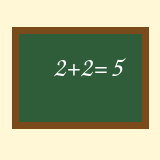
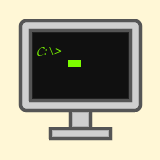

Link do poczty
Link do ściągania pliku
Link do środka tekstu
Link do końca tekstu
Link do strony zawierającej tabelę
Link do strony zawierającej formularz
Jan
Jan
Jan
Jan
Jan
Jan
Jan
Giergielewicz
Giergielewicz
Giergielewicz
Giergielewicz
Giergielewicz
Giergielewicz
:-) uśmiech - radość, zadowolenie
:-D szeroki uśmiech - głośny śmiech
;-) mrugnięcie - żart, przymrużenie oka
:-( smutek - zmartwienie
:-O zdziwienie - zaskoczenie
:-P wystawiony język - żartowanie, droczenie się
80-299 Gdańsk, ul. Lipowa 12/5
Ulubiony aktor: Tom Hanks
Ulubiony zespół: Queen
Data urodzenia: 30 maja 2010
Wzór chemiczny: H2SO4
Działanie: x*x=x2
Giergielewicz Jan
Dowcipy o informatykach
Dowcipy o szkole

Link do poczty
Link do ściągania pliku
Link początek tekstu
Link do końca tekstu
Link do strony zawierającej tabelę
Link do strony zawierającej formularz
Dowcipy o programistach

poniżej są trzy wyliczenia z różnymi znakami wyliczenia
Ty zaproponuj swoje, związane z informatyką
- procesor
- pamięć RAM
- dysk SSD
- karta graficzna
poniżej są trzy numerowania z różnymi znakami numerowania
Ty zaproponuj swoje, związane z informatyką
- analiza zadania
- napisanie kodu
- kompilacja
- testowanie
- pobranie obrazu ISO
- nagranie na pendrive
- uruchomienie instalatora
- sprzęt
- system operacyjny
- aplikacje
poniżej będą trzy poziomy numerowania/wyliczenia z różnymi rodzajami numerowania/wyliczenia
Ty zaproponuj swoje, związane z informatyką
- Sieci komputerowe
- Topologie
- gwiazda
- magistrala
- pierścień
- Protokoły
- Bazy danych
- Relacyjne
- Nierelacyjne
© ® ™ € § ♥ ¶
Link do poczty
Link do ściągania pliku
Link początek tekstu
Link do środka tekstu
Link do strony zawierającej tabelę
Link do strony zawierającej formularz